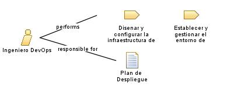

|
| Permite a colaboración y la entrega continua en el desarrollo de software. Elimina barreras entre los equipos de desarrollo y operaciones, fomentando la automatización, la integración continua y la implementación continua. |
| Synonyms: Especialista
en Despliegue y Operaciones, Arquitecto DevOps, Ingeniero de Operaciones |
|
Relationships
 |
| Primary Performs |
|
| Modifies |
|
Main Description
|
Mantiene soluciones de software eficientes y confiables al colaborar con los equipos de desarrollo y operaciones. Su
función principal es asegurar que los procesos de desarrollo y despliegue sean ágiles y eficientes, optimizando la calidad
y el tiempo de entrega del software. |
Staffing
| Skills | Comunicacion y
colaboracion, Conocimientos de programación y scripts |
| Synonyms | Especialista
en Despliegue y Operaciones, Arquitecto DevOps, Ingeniero de Operaciones |
|